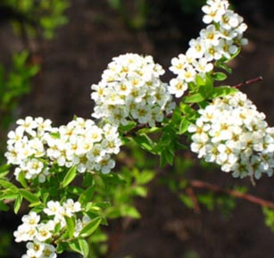

|

|
Скромная красавица спирея
Красивый и ухоженный участок мечта любого дачника.
Вы сделаете его одновременно привлекательным и практичным, если найдете место кустарникам.
Их выбор даже в нашей средней полосе настолько велик, что можно любоваться удивительной красочной палитрой
с ранней весны до поздней осени, а если добавить различные хвойные, то и зимой.
Слово спирея происходит от греческого слова speira - изгиб. Ветки куста изящно переплетаются.
Есть и народное название - таволга (с ударением на последнем слоге на юге России и на первом - на севере).
Сегодня растение имеет исключительно декоративную функцию. Оно любимо садоводами благодаря своим замечательным качествам:
неприхотливости в уходе, морозостойкости, легкости размножения и, главное, длительности цветения.
Если правильно рассадить на участке разные виды этого кустарника, он будет радовать вас цветами -
от белых до темно-пурпурных - с ранней весны до поздней осени. Спирея не требовательна к почве, светолюбива,
хорошо переносит и загазованный воздух города. Так что смело высаживайте ее не только на даче, но и около подъезда.
Хороша спирея для создания живых изгородей, украсит она и затейливый альпинарий.
|